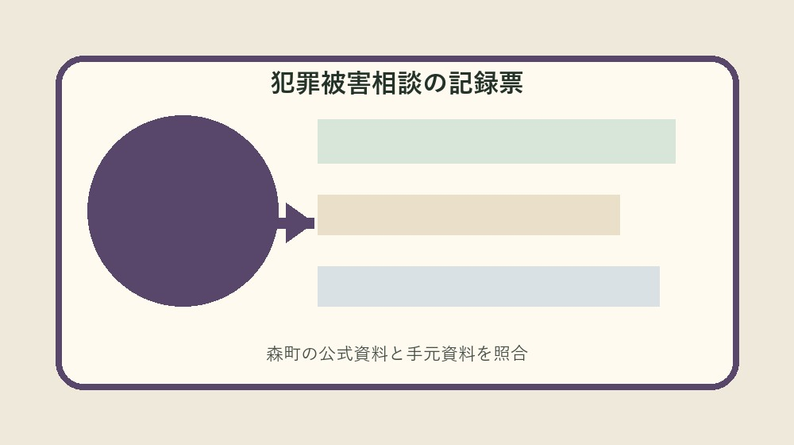
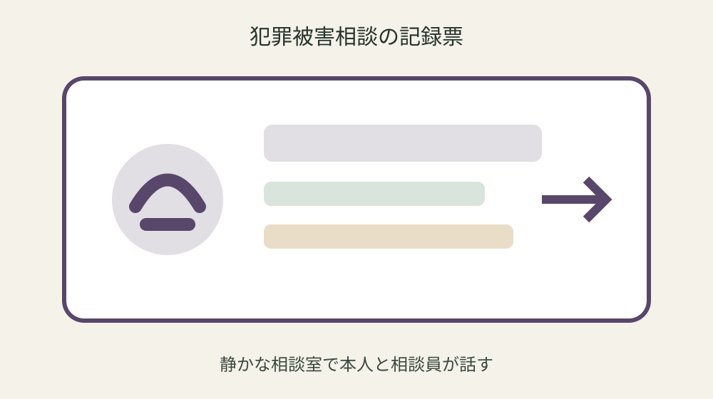
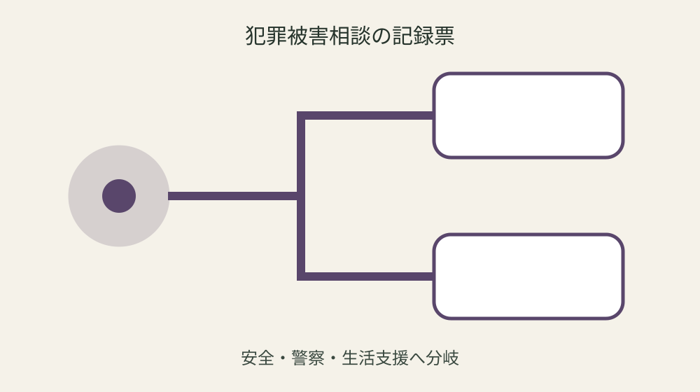

森町の犯罪被害者等総合相談｜話す範囲と希望支援を相談記録に分ける

結論：犯罪被害相談記録へ対象・基準日・手元資料・未確認事項を分け、最初の一問だけを森町へ確認します。森町は犯罪被害者等総合相談窓口を設置を起点に、実行直前の再確認までを一続きにしてください。
今の安全と通常相談を分ける
今の安全と通常相談を分けるでは、まず「森町は犯罪被害者等総合相談窓口を設置」という森町公式の条件を起点にします。犯罪被害相談記録には対象、日付、資料名、確認日を別欄で置き、制度名だけのメモにしません。手元の現物と公式説明が食い違う場合は、都合のよい方へ寄せず、差がある状態をそのまま残します。
実際の確認は、現物を見る人、電話する人、記録する人を決めてから始めます。本人だけで抱え込まず相談できる入口も同じ行へ書き、緊急時に通常窓口を待つことを避けます。数字や固有名は読み上げて照合し、不明欄には推定値ではなく「未確認」と次の確認先を記します。 この判断も犯罪被害相談記録の更新対象です。
森町へ尋ねるときは「今の安全と通常相談を分けるについて、手元ではここまで確認した」と一文で伝えます。そのうえで町窓口は生活上の困りごとの整理に使えるが自分の案件にどう当てはまるかを一問だけ確認します。回答日、担当部署、再確認が必要な時期まで記録すれば、家族や同僚が同じ質問を繰り返さずに済みます。 この判断も犯罪被害相談記録の更新対象です。
犯罪被害相談記録の更新では旧版を消しません。同席者の要否を本人の意向で決めるを採用した根拠、変更前の記載、変更した日を並べます。公式ページの更新や個別事情で結論が変わることがあるため、実行直前に最新案内を見直し、確認できない場合は作業を一段止めます。
相談者本人の希望を最初に置く
相談者本人の希望を最初に置くでは、まず「相談先は森町総務課行政係」という森町公式の条件を起点にします。犯罪被害相談記録には対象、日付、資料名、確認日を別欄で置き、制度名だけのメモにしません。手元の現物と公式説明が食い違う場合は、都合のよい方へ寄せず、差がある状態をそのまま残します。
実際の確認は、現物を見る人、電話する人、記録する人を決めてから始めます。緊急の危険がある場合は110番が優先も同じ行へ書き、本人の意思なく情報を広げることを避けます。数字や固有名は読み上げて照合し、不明欄には推定値ではなく「未確認」と次の確認先を記します。 この判断も犯罪被害相談記録の更新対象です。
森町へ尋ねるときは「相談者本人の希望を最初に置くについて、手元ではここまで確認した」と一文で伝えます。そのうえで相談前に全経緯を完全整理する必要はないが自分の案件にどう当てはまるかを一問だけ確認します。回答日、担当部署、再確認が必要な時期まで記録すれば、家族や同僚が同じ質問を繰り返さずに済みます。 この判断も犯罪被害相談記録の更新対象です。
犯罪被害相談記録の更新では旧版を消しません。個人情報は渡す相手と範囲を限定するを採用した根拠、変更前の記載、変更した日を並べます。公式ページの更新や個別事情で結論が変わることがあるため、実行直前に最新案内を見直し、確認できない場合は作業を一段止めます。
出来事と生活上の影響を別欄にする
出来事と生活上の影響を別欄にするでは、まず「相談者の状況に応じ関係機関へつなぐ窓口」という森町公式の条件を起点にします。犯罪被害相談記録には対象、日付、資料名、確認日を別欄で置き、制度名だけのメモにしません。手元の現物と公式説明が食い違う場合は、都合のよい方へ寄せず、差がある状態をそのまま残します。
実際の確認は、現物を見る人、電話する人、記録する人を決めてから始めます。被害届や捜査判断は警察の役割も同じ行へ書き、記憶の空白を推測で補うことを避けます。数字や固有名は読み上げて照合し、不明欄には推定値ではなく「未確認」と次の確認先を記します。 この判断も犯罪被害相談記録の更新対象です。
森町へ尋ねるときは「出来事と生活上の影響を別欄にするについて、手元ではここまで確認した」と一文で伝えます。そのうえで連絡を受けられる方法を相談時に伝えるが自分の案件にどう当てはまるかを一問だけ確認します。回答日、担当部署、再確認が必要な時期まで記録すれば、家族や同僚が同じ質問を繰り返さずに済みます。 この判断も犯罪被害相談記録の更新対象です。
犯罪被害相談記録の更新では旧版を消しません。窓口案内は実行前に最新連絡先を確認するを採用した根拠、変更前の記載、変更した日を並べます。公式ページの更新や個別事情で結論が変わることがあるため、実行直前に最新案内を見直し、確認できない場合は作業を一段止めます。
警察へ伝えた内容を二重に推測しない
警察へ伝えた内容を二重に推測しないでは、まず「本人だけで抱え込まず相談できる入口」という森町公式の条件を起点にします。犯罪被害相談記録には対象、日付、資料名、確認日を別欄で置き、制度名だけのメモにしません。手元の現物と公式説明が食い違う場合は、都合のよい方へ寄せず、差がある状態をそのまま残します。
実際の確認は、現物を見る人、電話する人、記録する人を決めてから始めます。町窓口は生活上の困りごとの整理に使えるも同じ行へ書き、緊急時に通常窓口を待つことを避けます。数字や固有名は読み上げて照合し、不明欄には推定値ではなく「未確認」と次の確認先を記します。 この判断も犯罪被害相談記録の更新対象です。
森町へ尋ねるときは「警察へ伝えた内容を二重に推測しないについて、手元ではここまで確認した」と一文で伝えます。そのうえで同席者の要否を本人の意向で決めるが自分の案件にどう当てはまるかを一問だけ確認します。回答日、担当部署、再確認が必要な時期まで記録すれば、家族や同僚が同じ質問を繰り返さずに済みます。 この判断も犯罪被害相談記録の更新対象です。
犯罪被害相談記録の更新では旧版を消しません。森町は犯罪被害者等総合相談窓口を設置を採用した根拠、変更前の記載、変更した日を並べます。公式ページの更新や個別事情で結論が変わることがあるため、実行直前に最新案内を見直し、確認できない場合は作業を一段止めます。

医療・住居・仕事の困りごとを並べる
医療・住居・仕事の困りごとを並べるでは、まず「緊急の危険がある場合は110番が優先」という森町公式の条件を起点にします。犯罪被害相談記録には対象、日付、資料名、確認日を別欄で置き、制度名だけのメモにしません。手元の現物と公式説明が食い違う場合は、都合のよい方へ寄せず、差がある状態をそのまま残します。
実際の確認は、現物を見る人、電話する人、記録する人を決めてから始めます。相談前に全経緯を完全整理する必要はないも同じ行へ書き、本人の意思なく情報を広げることを避けます。数字や固有名は読み上げて照合し、不明欄には推定値ではなく「未確認」と次の確認先を記します。 この判断も犯罪被害相談記録の更新対象です。
森町へ尋ねるときは「医療・住居・仕事の困りごとを並べるについて、手元ではここまで確認した」と一文で伝えます。そのうえで個人情報は渡す相手と範囲を限定するが自分の案件にどう当てはまるかを一問だけ確認します。回答日、担当部署、再確認が必要な時期まで記録すれば、家族や同僚が同じ質問を繰り返さずに済みます。 この判断も犯罪被害相談記録の更新対象です。
犯罪被害相談記録の更新では旧版を消しません。相談先は森町総務課行政係を採用した根拠、変更前の記載、変更した日を並べます。公式ページの更新や個別事情で結論が変わることがあるため、実行直前に最新案内を見直し、確認できない場合は作業を一段止めます。
連絡可能な時間と方法を決める
連絡可能な時間と方法を決めるでは、まず「被害届や捜査判断は警察の役割」という森町公式の条件を起点にします。犯罪被害相談記録には対象、日付、資料名、確認日を別欄で置き、制度名だけのメモにしません。手元の現物と公式説明が食い違う場合は、都合のよい方へ寄せず、差がある状態をそのまま残します。
実際の確認は、現物を見る人、電話する人、記録する人を決めてから始めます。連絡を受けられる方法を相談時に伝えるも同じ行へ書き、記憶の空白を推測で補うことを避けます。数字や固有名は読み上げて照合し、不明欄には推定値ではなく「未確認」と次の確認先を記します。 この判断も犯罪被害相談記録の更新対象です。
森町へ尋ねるときは「連絡可能な時間と方法を決めるについて、手元ではここまで確認した」と一文で伝えます。そのうえで窓口案内は実行前に最新連絡先を確認するが自分の案件にどう当てはまるかを一問だけ確認します。回答日、担当部署、再確認が必要な時期まで記録すれば、家族や同僚が同じ質問を繰り返さずに済みます。 この判断も犯罪被害相談記録の更新対象です。
犯罪被害相談記録の更新では旧版を消しません。相談者の状況に応じ関係機関へつなぐ窓口を採用した根拠、変更前の記載、変更した日を並べます。公式ページの更新や個別事情で結論が変わることがあるため、実行直前に最新案内を見直し、確認できない場合は作業を一段止めます。
同席者へ渡す情報を限定する
同席者へ渡す情報を限定するでは、まず「町窓口は生活上の困りごとの整理に使える」という森町公式の条件を起点にします。犯罪被害相談記録には対象、日付、資料名、確認日を別欄で置き、制度名だけのメモにしません。手元の現物と公式説明が食い違う場合は、都合のよい方へ寄せず、差がある状態をそのまま残します。
実際の確認は、現物を見る人、電話する人、記録する人を決めてから始めます。同席者の要否を本人の意向で決めるも同じ行へ書き、緊急時に通常窓口を待つことを避けます。数字や固有名は読み上げて照合し、不明欄には推定値ではなく「未確認」と次の確認先を記します。 この判断も犯罪被害相談記録の更新対象です。
森町へ尋ねるときは「同席者へ渡す情報を限定するについて、手元ではここまで確認した」と一文で伝えます。そのうえで森町は犯罪被害者等総合相談窓口を設置が自分の案件にどう当てはまるかを一問だけ確認します。回答日、担当部署、再確認が必要な時期まで記録すれば、家族や同僚が同じ質問を繰り返さずに済みます。 この判断も犯罪被害相談記録の更新対象です。
犯罪被害相談記録の更新では旧版を消しません。本人だけで抱え込まず相談できる入口を採用した根拠、変更前の記載、変更した日を並べます。公式ページの更新や個別事情で結論が変わることがあるため、実行直前に最新案内を見直し、確認できない場合は作業を一段止めます。

次の機関と折返し日を記録する
次の機関と折返し日を記録するでは、まず「相談前に全経緯を完全整理する必要はない」という森町公式の条件を起点にします。犯罪被害相談記録には対象、日付、資料名、確認日を別欄で置き、制度名だけのメモにしません。手元の現物と公式説明が食い違う場合は、都合のよい方へ寄せず、差がある状態をそのまま残します。
実際の確認は、現物を見る人、電話する人、記録する人を決めてから始めます。個人情報は渡す相手と範囲を限定するも同じ行へ書き、本人の意思なく情報を広げることを避けます。数字や固有名は読み上げて照合し、不明欄には推定値ではなく「未確認」と次の確認先を記します。 この判断も犯罪被害相談記録の更新対象です。
森町へ尋ねるときは「次の機関と折返し日を記録するについて、手元ではここまで確認した」と一文で伝えます。そのうえで相談先は森町総務課行政係が自分の案件にどう当てはまるかを一問だけ確認します。回答日、担当部署、再確認が必要な時期まで記録すれば、家族や同僚が同じ質問を繰り返さずに済みます。 この判断も犯罪被害相談記録の更新対象です。
犯罪被害相談記録の更新では旧版を消しません。緊急の危険がある場合は110番が優先を採用した根拠、変更前の記載、変更した日を並べます。公式ページの更新や個別事情で結論が変わることがあるため、実行直前に最新案内を見直し、確認できない場合は作業を一段止めます。
良い点
犯罪被害相談記録に確認済み事実と未確認事項を分けると、制度の対象外を恐れて何もしない状態から、次の一問を決める状態へ進めます。
相談者の状況に応じ関係機関へつなぐ窓口という具体条件を家族で共有でき、担当が替わっても根拠をたどれます。
期限、現物、回答日が一枚に集まり、書類の取り直しと問い合わせの重複を減らせます。
公式資料だけで断定できない個別条件を未確認として残せることも、この方法の利点です。
注文したい点
森町の案内には制度条件が整理されていますが、初めて手続きをする人には、個別案件の順番が読み取りにくい部分があります。
緊急時に通常窓口を待つことを避けるため、記入例や受付後の流れも同じページから確認できるとさらに使いやすくなります。
年度更新時には変更箇所と変更日が目立つ表示になると、保存した旧資料との取り違えを減らせます。
これは現行制度の否定ではなく、利用者が正しい窓口へ一度で到達するための改善要望です。
対案・結論
結論は、犯罪被害相談記録を今日一枚作り、最初の未確認欄だけを森町へ尋ねることです。
全条件を一度に覚えず、公式事実、手元資料、窓口回答、次の期限を四列に分けます。
緊急の危険がある場合は110番が優先を確認しても、個別可否は案件ごとに変わり得るため、支出や申請の直前に再確認します。
確認が終わったら旧版を残し、次回の担当が同じ根拠から続けられる状態を完成とします。
大石の視点
ここまでの制度条件は森町公式資料から確認した事実です。以下は私、大石浩之の実務提案であり、森町の公式見解ではありません。
私は犯罪被害相談記録を紙一枚から始め、原本を動かさず、写真や写しへ番号を付ける方法を勧めます。
未確認欄は失敗ではありません。確認先と期限のある空欄は、根拠のない推測より実用的です。
個人情報を含む場合は内部保管版と提出版を分け、必要な範囲だけを相手へ渡してください。
よくある質問
犯罪被害相談記録は何から始めますか。
対象者または対象物、基準日、手元資料を一行にし、最初の公式条件「森町は犯罪被害者等総合相談窓口を設置」と照合します。
資料が足りなくても犯罪被害相談記録を作れますか。
作れます。不足欄を推測で埋めず、必要資料、確認先、期限を書けば、後から安全に再開できます。
公式ページを一度保存すれば十分ですか。
十分ではありません。相談先は森町総務課行政係などの条件は更新される場合があるため、実行直前に現行ページを確認します。
家族や担当者へ渡すとき何を添えますか。
確認済み事実、未確認事項、次の担当、期限、原本保管場所、町へ尋ねた日と回答を添えます。
公式情報源
- 犯罪被害者等総合相談窓口（2026年8月20日確認）
- 防災・安全の相談案内（2026年8月20日確認）

最終確認日：2026-08-20 ／ 公表事実と執筆者の解釈・意見を分けて記載しています。